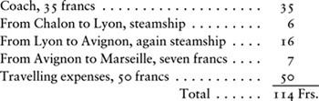

The first floor in the house on the Rue Saint-Germain-des-Prés1 which Albert de Morcerf had chosen for his mother and himself consisted of a little, self-contained apartment which was rented to a very mysterious character.
Not even the concierge had seen the man’s face, either when he was coming in or going out. In winter he buried his chin in one of those red scarves that high-class coachmen wear while they are waiting for their masters to leave the theatre; in summer he was always blowing his nose just at the moment when he might have been seen going in front of the lodge. It must be said that, contrary to all usual practice, this inhabitant was not being spied on by anyone and that the rumour going around that his alias disguised a most eminent personage – and one who could pull lots of strings – had led people to respect the mystery of his comings and goings.
His visits were usually at fixed times, though sometimes delayed or brought forward: but almost always, winter and summer, he took possession of the apartment at four o’clock, but never stayed the night there.
At half-past three, in winter, the fire was discreetly lit by the servant who had charge of the little apartment; and at half-past three, in summer, the same girl would bring up ices.
At four o’clock, as we have said, the mysterious character would arrive.
Twenty minutes later, a carriage would stop in front of the house. A woman in black or dark blue, always wrapped in a huge veil, would get out, drift like a shadow in front of the concierge’s lodge and go up the stairs, though no one ever heard a single board creak under her light footsteps. Nor had anyone ever asked her where she was going.
Her face, like the stranger’s, was thus entirely unknown to the two door-keepers, model concierges and perhaps the only ones in the vast brotherhood of the capital’s watchdogs who would have been capable of such discretion.
Needless to say, she went up only as far as the first floor. She scratched in a special way on the door, which opened then closed tightly, and that’s all.
To leave the building, the same procedure was followed. The woman would go out first, always veiled, and get back into her carriage, which vanished sometimes down one end of the street, sometimes the other. Then, twenty minutes later, the stranger would go out in his turn, buried in his scarf or hidden behind his handkerchief, and he too would disappear.
The day after the one on which Monte Cristo had paid his visit to Danglars, the day of Valentine’s funeral, the mysterious occupier came in at around ten o’clock in the morning, instead of his usual time of four in the afternoon. Almost at once, without leaving the usual space of time, a hired cab arrived and the veiled lady quickly went up the stairs. The door opened and closed. But, even before the door had closed, the lady exclaimed: ‘Oh, Lucien! Oh, my friend!’ – with the result that, for the first time, the concierge who had overheard the exclamation was made involuntarily aware that his tenant was called Lucien; but, being a model doorkeeper, he resolved not to mention it, even to his wife.
‘What is it, my dearest?’ asked the man whose name the veiled lady had revealed, in her anxiety or her haste. ‘Tell me.’
‘My dear, can I count on you?’
‘Of course, as you very well know. What is wrong? Your note this morning was quite bewildering: the haste and disorder in your handwriting… Come, reassure me or terrify me entirely!’
‘Lucien, something of great importance!’ she replied, scrutinizing him closely. ‘Monsieur Danglars left last night!’
‘Left! Monsieur Danglars! Where has he gone?’
‘I don’t know.’
‘What do you mean, you don’t know? Has he gone for good?’
‘Certainly. At ten in the evening, his horses took him to the barrier at Charenton. There, he found a coach ready harnessed. He got in with his valet and told his coachman he was going to Fontainebleau.’
‘So, what did you mean… ?’
‘One moment, dear. He left me a letter.’
‘A letter?’
‘Yes. Read it.’ And she reached in her pocket for an unsealed letter which she gave Debray.
Before reading it, he hesitated, as if seeking to guess what it contained; or, rather, as if, whatever it contained, he had decided to make up his mind in advance. After a few moments, his decision had no doubt been reached, because he began to read.
The following were the contents of the letter that had so disturbed Mme Danglars:
Madame, My Most Faithful Wife…
Unconsciously, Debray stopped and looked at the baroness, who blushed to the roots of her hair. ‘Read it,’ she said.
Debray went on:
When you receive this letter you will no longer have a husband! Oh, don’t be too alarmed: you will not have a husband in the sense that you no longer have a daughter, by which I mean that I shall be on one of the thirty or forty roads leading out of France.
I owe you an explanation and, since you are a woman who will understand it perfectly, I shall give it to you. Here it is:
This morning I received a demand for payment of five million, and I honoured it. Another for the same amount followed almost immediately. I adjourned it until tomorrow, and I am leaving today to avoid that tomorrow which would be too unpleasant for me to bear.
You do understand, do you not, Madame and most precious wife? If I say ‘you do understand’, it is because you know my affairs as well as I do myself. You may even know them better than I do, since I should be unable to say, if anyone were to ask me, where at least half of my fortune has vanished, though it was once quite considerable; while I am certain that you, on the contrary, would be entirely capable of doing so.
Women have infallible instincts and can explain even miracles by an algebra of their own devising. I know only my figures, and I knew nothing from the day when my figures began to deceive me.
Have you ever admired the rapidity of my fall, Madame? Have you been slightly dazzled by the bright flame that has devoured my ingots? I must confess that I saw only fire, but let’s hope that you managed to find some gold in the ashes.
It is with that consolation that I depart, Madame, my most prudent spouse, without the slightest pricking of conscience at abandoning you. You still have your friends, the ashes I mentioned and, to complete your happiness, the freedom that I hasten to give you.
However, Madame, the moment has come to introduce a word or two on more intimate matters.
As long as I hoped you were working for the good of our family and the prosperity of our daughter, I philosophically turned a blind eye; but since you have brought our house to ruin, I do not wish to provide a foundation for another man’s wealth.
I took you rich, but with little honour.
Forgive me for speaking so frankly but, since it is probable that only we will read these words, I do not see why I should mince them.
I increased our wealth, which continued to grow for more than fifteen years, until the moment when these unknown catastrophes, which I am still unable to comprehend, arrived to seize it and cast it down – without my being to blame, I might say, for any of it.
You, Madame, have been working solely to increase your own wealth and that, I am certain in my own mind, you have managed to do. So I shall leave you as I found you, rich, but scarcely honourable.
Adieu.
From now on, I too shall start to work for my own benefit.
Accept the assurance of my gratitude for the example which you have given me, and which I shall follow.
Your most devoted husband.
BARON DANGLARS
The baroness had been watching Debray during the long and painful reading of this letter and, despite his well-known self-control, she had seen the young man change colour once or twice. When he had finished, he slowly refolded the paper and resumed his pensive attitude.
‘Well?’ Mme Danglars asked, with understandable anxiety.
‘Well, Madame?’ Debray repeated mechanically.
‘What do you think of this letter?’
‘Very simple. I think Monsieur Danglars was suspicious.’
‘Of course he was; but what do you have to tell me?’
‘I don’t follow you,’ Debray said, icy cold.
‘He has left, altogether gone! Left, never to return!’
‘Oh,’ Debray said, ‘don’t think that, Baroness.’
‘I tell you, he will never come back. I know him: he is quite unshakeable in any resolution that reflects his own interests. If he had thought me of any use to him, he would have taken me. If he has left me in Paris, it is because the separation can serve his own ends: this means that he will never change his mind and that I am free for ever,’ Mme Danglars added, with the same pleading expression. But Debray, instead of answering, left her poised in the same anxious and questioning state of mind and posture.
‘What!’ she said finally. ‘Do you not even answer me, Monsieur!’
‘I have only one question to ask of you: what do you expect will become of you?’
‘I was going to ask you,’ the baroness replied, her heart pounding.
‘Oh?’ said Debray. ‘Are you asking for my advice, then?’
‘Yes, I would like your advice,’ the baroness said through dry lips.
‘Well, if you’re asking my advice,’ the young man said, ‘I would advise you to travel.’
‘Travel!’ muttered Mme Danglars.
‘Yes, indeed. As Monsieur Danglars said, you are rich and quite free. It will be absolutely necessary for you to leave Paris in any case, I should have thought, after the double scandal of Mademoiselle Eugénie’s broken engagement and Monsieur Danglars’ disappearance. All that matters is that everyone should know that you have been abandoned and should think you poor, because a bankrupt’s wife would not be forgiven her opulent style of life.
‘To achieve this, all you need do is to remain a fortnight in Paris, repeating to everyone that you have been abandoned and telling your closest friends, who will repeat it to everyone, exactly how the desertion took place. Then you must move out of your mansion, leaving behind your jewels and relinquishing your dowry, and everybody will admire your disinterestedness and sing your praises.
‘Then it will be known that you have been abandoned and people will think you are poor. Only I know your true financial situation and will be willing to account to you for it as your loyal associate.’
Pale, devastated, the baroness had listened to this speech with as much dread and despair as Debray had shown calm and indifference in delivering it. ‘Abandoned!’ she repeated. ‘Oh, yes, indeed abandoned. Yes, you are right, Monsieur: no one will doubt my abandonment.’
These were the only words that a proud woman, deeply in love, could reply.
‘But rich, very rich,’ Debray continued, opening his wallet and spreading the few papers it contained across the table.
Mme Danglars ignored him, being entirely taken up with quelling the beating of her heart and holding back the tears which she felt pricking at the corners of her eyes. Finally her sense of self-respect got the upper hand and, though she could not suppress the beating of her heart, she did at least manage to avoid shedding a tear.
‘Madame,’ Debray said, ‘we have been associated for some six months. You contributed funds to the value of one hundred thousand francs.
‘Our association dates from April this year. Our speculations began in May.
‘In that month we made four hundred and fifty thousand francs. In June, profits amounted to nine hundred thousand. In July, we added a further one million seven hundred thousand francs: that, as you know, was the month of the Spanish bonds.
‘In August, at the start of the month, we lost three hundred thousand, but by the fifteenth we had recovered our losses and by the end of the month we had our revenge. Our accounts, brought up to date from the time when we formed our partnership to yesterday, when I closed them, give us assets amounting to two million four hundred thousand francs, that is to say, twelve hundred thousand francs each.
‘Now,’ he continued, slamming his account book shut with the steady and methodical hand of a stockbroker, ‘we find eighty thousand francs for the compound interest on that sum which has remained in my hands.’
‘But what is this interest?’ the baroness interrupted. ‘What does it mean, since you never invested the money?’
‘I beg your pardon, Madame,’ Debray said coldly. ‘I had your authority to exploit it and I took advantage of it. This means forty thousand francs in interest for your half, plus the hundred thousand francs of the original capital sum, that is to say thirteen hundred and forty thousand francs for your share.
‘Well, Madame,’ he continued, ‘I took the precaution of cashing your money in yesterday – not long ago, as you see: anyone would think I had been expecting at any moment to be asked to account to you for it. It is there, half in banknotes, half in bills, payable to the bearer.
‘I say “there”, and it’s true. As I thought my house was not sufficiently secure and a notary not discreet enough, and property speaks even louder than a notary… In short, since you do not have the right to buy or possess anything apart from the joint property of the marriage, I kept this entire sum, which is today your only fortune, in a safe at the bottom of this wardrobe and, to be even more secure, I did the carpentry myself.
‘Now,’ he went on, opening first the wardrobe, then the safe, ‘here are eight hundred notes of one thousand francs each, which, as you can see, resemble a thick, iron-bound volume. To that I have added a bond for twenty-five thousand francs and finally, to make up the sum, which amounts, I believe, to something around a hundred and ten thousand francs, here is a demand note on my banker – and since my banker is not Monsieur Danglars, the note will be honoured, I can assure you.’
Mme Danglars mechanically took the demand note, the bond and the sheaf of banknotes.
This vast fortune seemed to amount to very little, laid out in that way on a table. Mme Danglars, dry-eyed but with her breast swelling with sobs, picked it up and shut the steel-bound pouch in her case, put the bond and the demand note in her portfolio and stood, pale and silent, waiting for one kind word that might console her for being so rich. But she waited in vain.
‘Now, Madame,’ Debray said, ‘you have a splendid living, an income of something like sixty thousand livres, an enormous sum for a woman who will not be able to set up house for at least a year from now. This will allow you to indulge whatever notion may pass through your head; apart from which, if you should find your share inadequate, in consideration of the past that is now fading away from you, you may dip into mine. I am prepared to offer you – oh, as a loan, naturally! – all that I possess, that is to say, one million sixty thousand francs.’
‘Thank you, Monsieur,’ the baroness replied. ‘Thank you; but you will appreciate that what you have given me here is far more than could be required by a poor woman who does not envisage reappearing in society, at least for a long time hence.’
For a moment Debray was astonished, but he recovered and made a gesture that might most politely be interpreted as: ‘Do as you please.’
Up to then, Mme Danglars had perhaps continued to hope for something, but when she saw the casual gesture that Debray had just unconsciously made, and the sidelong glance that accompanied it, as well as the deep bow and significant silence that followed them, she raised her head, opened the door and, with no outburst of anger or nerves, but also without hesitation, she swept down the stairs, not even deigning to address a nod of farewell to the man who was allowing her to leave in this manner.
‘Pooh!’ Debray said, when she had gone. ‘Fine plans! She will stay in her house, read novels and play lansquenet, since she cannot play on the Exchange any longer.’ And he took up his notebook, carefully crossing out the amounts he had just paid.
‘I have one million sixty thousand francs left,’ he said. ‘What a pity Mademoiselle de Villefort is dead! There’s a woman who would have suited me in every respect; I should have married her.’
Phlegmatically, as usual, he waited for twenty minutes after Mme Danglars’ departure before leaving himself. During these twenty minutes, he did his accounts, with his watch on the table beside him.
Asmodée, that diabolical personage whom any adventurous imagination might have created with a greater or lesser degree of felicity, had Le Sage2 not already established priority with his masterpiece, Asmodée, then, who lifted the roofs off houses in order to see inside, would have enjoyed a remarkable scene if, at the moment when Debray was doing his accounts, he had raised the top of the little boarding-house in the Rue Saint-Germain-des-Prés.
Above the room in which Debray had just shared out two and a half million francs with Mme Danglars, there was another room, also occupied by people we know, people who played an important enough role in the events which have just been described for us to take a continuing interest in them.
In this room were Mercédès and Albert.
Mercédès had changed a great deal in the past few days. It was not that, even at the time of her greatest wealth, she had ever displayed the proud luxury that visibly marks a person out from other ranks in society and means that one can no longer recognize her when she appears in more simple attire; nor was it that she had fallen into that state of depression where one is driven to wear an outward appearance of misery. No, Mercédès had changed because her eyes no longer shone, her mouth no longer smiled and a perpetual sense of constraint froze on her lips the quick retort formerly thrown up by an ever-ready wit.
It was not poverty that had withered Mercédès’ intelligence or lack of courage that made her poverty burdensome to her.
Stepping down from the sphere in which she had lived, lost in the new sphere which she had chosen for herself, Mercédès was like those people who suddenly emerge out of a splendidly illuminated salon into darkness. She seemed like a queen who had left her palace for a cottage and who, reduced to the absolute essentials, cannot recognize herself either in the earthenware dishes that she is obliged to carry to the table in her own hands, or in the straw mattress that has replaced her feather bed.
Neither the beautiful Catalan nor the noble countess had preserved her proud look or her charming smile, because when her eyes rested on what was around her the only objects they met were distressing: the room was papered in one of those grey-on-grey papers that thrifty landlords choose because they show the dirt least; there was no carpet on the floor, and the furniture attracted attention, obliging one to contemplate the poverty in affected luxury; in short, these were all things that clashed and were liable to upset eyes accustomed to harmony and elegance.
Mme de Morcerf had been living here ever since she had left the family mansion. She found the silence dizzying, like a traveller reaching the edge of a precipice. Noticing that Albert was constantly looking at her surreptitiously to judge her state of mind, she had forced herself to wear an unchanging smile on her lips which, since it was not accompanied by that gentle glow of a smile in the eyes, produced the same effect as simple luminescence, that is to say light without warmth.
Albert, for his part, was preoccupied, ill at ease, embarrassed by the remnants of a lifestyle that prevented him from belonging to his present state. He wanted to go out without gloves, and considered his hands too white. He wanted to walk everywhere and thought his boots were too well-polished.
However, these two noble and intelligent creatures, indissolubly linked by ties of maternal and filial love, could understand one another without speaking and economize on all the niceties required between friends to accept the material truth on which life depends. At last, Albert was able to say to his mother, without frightening her: ‘Mother, we have no money left.’
Mercédès had never really known destitution. Often, in her youth, she had herself spoken of poverty, but that is not the same thing: ‘need’ and ‘necessity’ are synonyms, but there is a world of difference between them.
In the Catalan village, Mercédès had needed for many things, but she never went without certain others. As long as the nets were in good repair, they caught fish; as long as the fish were sold, they had rope to repair the nets. And then, isolated from friendship, only having a love that had nothing to do with the material details of the situation, one thought of oneself, each for oneself, only oneself.
From the little that she had, Mercédès used to make her share as generously as possible. Now she had two shares to make, and from nothing.
Winter was coming on. Mercédès, in this bare room, already cold, had no fire – though once she had had a boiler which had heated the whole house from the halls to the bedrooms; she did not even have one miserable little flower, though her rooms had once been a hothouse which cost a king’s ransom to furnish with plants. But she did have her son…
Up to then, the joy of fulfilling, perhaps over-fulfilling, their duty had kept them in a state of exultation. Such a state is close to enthusiasm and that makes one insensible to the things of this earth. But their enthusiasm had died down, and they had had gradually to return from the land of dreams to the world of reality.
When the ideal was exhausted, they had to talk of practicalities.
‘Mother,’ Albert said, just as Mme Danglars was coming down the stairs, ‘let’s just count all our wealth, if you don’t mind. I need a total on which to build my plans.’
‘Total: nothing,’ Mercédès said with a pained smile.
‘On the contrary, mother, total: three thousand francs, first of all, and then I intend with those three thousand francs to give us a truly delightful life.’
‘My child!’ Mercédès sighed.
‘Alas, my dear mother,’ the young man said, ‘I have unfortunately spent enough of your money to know its worth. You see, now, three thousand francs is a vast sum: I have built a miraculous future on it, one of everlasting security.’
‘You say that, my dear,’ the poor mother said, blushing, ‘but can we even accept these three thousand francs?’
‘I think it’s agreed we can,’ said Albert in a firm voice. ‘We accept them all the more readily since we do not have them, for as you know they are buried in the garden of the little house in the Allées de Meilhan, in Marseille. With two hundred francs,’ he continued, ‘we shall both go to Marseille.’
‘For two hundred francs!’ said Mercédès. ‘Do you really think that, Albert?’
‘Oh, I’m absolutely sure of it. I’ve enquired about coaches and steamships and done my sums. You hire your seats in the coach for Chalon: you see, mother, I’m treating you like a queen; that’s thirty-five francs…’
He took a pen and wrote:

‘Let’s say one hundred and twenty,’ Albert said, with a smile. ‘See how generous I am, mother?’
‘But what about you, my poor boy?’
‘Me! Don’t you see that I’ve left eighty francs for myself? A young man does not need a good deal of comfort. In any case, I know what it means to travel.’
‘With your post-chaise and your valet.’
‘However it may be, I know, mother.’
‘Very well,’ said Mercédès. ‘But the two hundred francs?’
‘Here they are, and another two hundred. I sold my watch for a hundred francs and the chain and trimmings for three hundred. Isn’t that splendid: a watch-chain worth three times as much as the watch! A matter of sheer excess again. So we are rich since, instead of the hundred and fourteen francs you needed for the journey, you now have two hundred and fifty.’
‘But do we owe something for our rent here?’
‘Thirty francs, which I can take out of my hundred and fifty. So it’s agreed. And, since I only need eighty francs myself for the journey, if it comes down to it, you can see we’re in the lap of luxury. But that’s not all; what do you say to this, mother?’
And, out of a little wallet with a gold lock – the remnant of some past self-indulgence or perhaps a tender souvenir of one of those mysterious, veiled women who used to knock at the little door – Albert took a thousand-franc note.
‘What is that?’ Mercédès asked.
‘A thousand francs, mother. Oh, it’s perfectly in order.’
‘But where did it come from?’
‘Now listen to me, mother, and don’t get too excited.’ Albert stood up, went over to kiss his mother on both cheeks, then paused to look at her.
‘You have no idea, mother, how beautiful I think you are!’ he said, with profound feelings of filial love. ‘You really are the most beautiful woman I have ever seen, and the most noble.’
‘Dear child!’ Mercédès said, trying unsuccessfully to hold back the tears that were forming in the corners of her eyes.
‘I do think that you needed only to be unhappy for my love to change to adoration.’
‘I am not unhappy while I have my son,’ Mercédès said. ‘I never shall be, as long as I have him.’
‘Oh, yes, now,’ said Albert. ‘That’s where the trying times will begin. You know what is agreed?’
‘Have we agreed something?’ Mercédès asked.
‘Yes, it is agreed that you will live in Marseille and I shall leave for Africa. There, instead of the name I have given up, I shall make for myself the name I have adopted.’
Mercédès sighed.
‘Well, mother, yesterday I enrolled in the spahis,’ the young man said, lowering his eyes with some feeling of shame, not realizing how sublime his humiliation was. ‘Or, rather, I thought that my body was mine and that I could sell it; since yesterday I have replaced someone. I have sold myself, as they say, and…’ he added, forcing a smile, ‘dearer than I ever expected, that is to say for two thousand francs.’
‘So this thousand francs?’ Mercédès said, shuddering.
‘Half of the amount, mother; the rest in a year’s time.’
Mercédès raised her eyes heavenwards with an expression beyond the power of any artist to depict. Her inner feelings overflowed and the two tears poised on the rim of her eyelids ran silently down her cheeks. ‘The price of his blood,’ she murmured.
‘Yes, if I should be killed,’ said Morcerf, with a laugh. ‘But I assure you, dear mother, that I have every intention of defending myself savagely. I have never felt such a strong desire to live.’
‘My God, my God!’ Mercédès said.
‘Anyway, mother, why should I be killed? Was Lamoricière killed, that second Ney from the south? Was Changarnier killed? Or Bedeau?3 Has our friend Morrel been killed? Just think how pleased you will be when you see me come home in my uniform with the braid on it! I do assure you, I intend to look quite magnificent in it; I only chose that regiment for the sake of the uniform.’
Mercédès sighed, while attempting to smile. The saintly woman realized that it was wrong for her to let her son bear all the weight of their sacrifice.
‘So, you see, mother,’ Albert said, ‘you are already guaranteed more than four thousand francs. With that you can live for at least two years.’
‘Do you think so?’ said Mercédès.
The words had slipped out, and the pain behind them was so real that Albert could not help grasping their real meaning. He felt a lump in his throat and, taking his mother’s hand, clasped it tenderly in his and said: ‘Oh, yes, you shall live!’
‘I shall,’ Mercédès exclaimed. ‘But you will not go, will you, my son?’
‘Mother, I must,’ Albert said, firmly and calmly. ‘You love me too much to keep me beside you in fruitless idleness. In any case, I have signed my name.’
‘You must do what you will, my son. I shall do what God wills.’
‘Not what I will, mother, but what reason and necessity dictate. We are two desperate creatures, aren’t we? What is life for you now? Nothing. What is life for me? Very little indeed without you, mother, believe me. Without you, I swear, my life would have ended on the day when I first doubted my father and renounced his name. But I shall live, if you promise me that you will continue to hope. If you leave your future happiness in my care, you will double my strength. When I arrive there, I shall go and see the governor of Algeria. He is a fine man and, above all, a true soldier. I will tell him my sad story and beg him to watch me from time to time. If he does so, and sees how I manage, in six months I shall be an officer or dead. If I am an officer, mother, then your future is assured, because I shall have enough money for both of us and a new name of which we can both be proud, since it will be your true name. If I am killed… Well, if I am killed, then, mother dear, you will die, if you please, and our misfortunes will be ended by their own excess.’
‘Very well,’ said Mercédès, with her noble and eloquent look. ‘You are right, my son. Let us prove to certain people who are watching us and waiting to see what we will do to criticize us, and let us at least prove to them that we deserve their sympathy.’
‘But let’s have no funereal thoughts, mother: I swear to you that we are, or at least can be, very happy. You are a woman who is both full of wit and resigned; I have become simple in my tastes and, I hope, without passion. Once I am in the army, I shall be rich; once you are in Monsieur Dantès’ house, you will be at peace. Let’s try, mother, I beg you, let’s try.’
‘Yes, my son, you must live, you must be happy,’ Mercédès replied.
‘So, we each have our shares,’ the young man concluded, giving an appearance of being utterly at ease. ‘We can leave today. Come then, I shall reserve your place, as they say.’
‘And yours?’
‘I must stay here two or three days more. This is a first separation and we must get used to it. I need a few letters of recommendation and some information about Africa; then I shall join you in Marseille.’
‘Very well then, let’s go!’ Mercédès said, wrapping herself in the only shawl she had brought with her, which happened to be a very expensive black cashmere. ‘Let’s go!’
Albert hurriedly collected his papers, rang to pay the thirty francs he owed the owner of the boarding house, and offered his mother his arm to go down the stairs.
Someone was going down in front of them and this someone, hearing the rustling of a silk dress on the banisters, turned around.
‘You, Morcerf!’ the minister’s secretary answered, stopping on the stair where he was standing.
Curiosity overcame Debray’s wish to remain incognito; in any event, he had been recognized. There was something very intriguing about discovering the young man whose misfortune was the talk of the whole town in this obscure boarding-house.
‘Morcerf!’ Debray repeated. Then, noticing Mme de Morcerf’s still youthful figure in the half-light and her black veil, he added, smiling: ‘Oh, I beg your pardon, Albert! I shall leave you.’
Albert understood what he was thinking. ‘Mother,’ he said, turning to Mercédès, ‘this is Monsieur Debray, secretary to the Minister of the Interior, and one of my former friends.’
‘What do you mean, “former”?’ Debray spluttered.
‘I say that, Monsieur Debray,’ Albert went on, ‘because today I have no more friends and must have none. I thank you very much, Monsieur, for being so good as to recognize me.’
Debray ran up the two steps and shook Albert’s hand earnestly. ‘Believe me, my dear Albert,’ he said, with all the feeling of which he was capable, ‘I sympathized deeply in the misfortune that has befallen you and I am at your disposal for anything you should need.’
‘Thank you, Monsieur,’ Albert said, smiling. ‘But, despite our misfortunes, we have remained rich enough not to need to apply to anyone. We are leaving Paris and, after paying for our journey, we shall have five thousand francs left.’
Debray blushed. He had a million in his portfolio. However little poetry there was in that mathematical soul, he could not escape the reflection that the same house had only a short while before contained two women, one of whom, justly dishonoured, had left poverty-stricken despite the fifteen hundred thousand francs under her cloak; while the other, unjustly struck down, sublime in her misfortune, considered herself rich with a few pence. The comparison deflected his polite platitudes and the force of the example crushed every argument. He muttered a few more or less civil words and hastened to the bottom of the stairs.
That day, the clerks in the ministry who worked for him had to put up with a good deal of irritation. In the evening, however, he purchased a very fine house, situated on the Boulevard de la Madeleine, which brought in 50,000 francs a year.
The following day, at the time when Debray was signing the deeds, that is to say at about five o’clock in the evening, Mme de Morcerf tenderly embraced her son and was tenderly embraced by him, then got into the stagecoach, the door of which shut behind her.
A man was hidden in the courtyard of the Messageries Laffitte, behind one of those arched mezzanine windows above each of the offices. He saw Mercédès get into the coach and saw it drive off. He watched Albert walk away. Then he drew his hand across a brow furrowed with doubt and said: ‘Alas! How can I give those two innocent people back the happiness I have taken away from them? God will help me.’